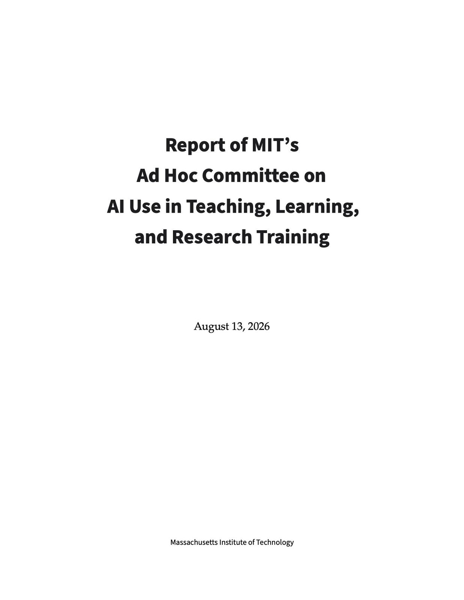
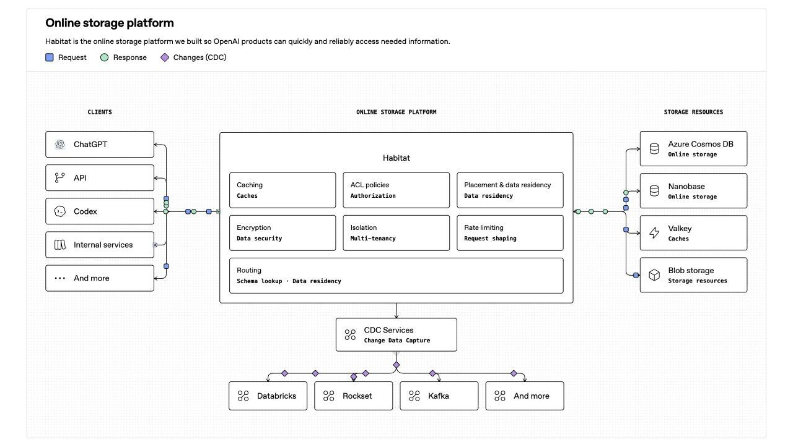

BREAKING: The Telegraph writes that the leaders of Scotland, Wales and Northern Ireland will meet in Cardiff tomorrow sign a deal on starting cooperation breaking up the UK. They will demand the right to independence referendum, or in the case of Northern Ireland, on the right to become part of Ireland. After Plaid Cymru routed Labour in the last Welsh election, separatist parties are now for the first time in power in Scotland, Wales and Northern Ireland at the same time. The three first minister will also meet in Cardiff with Mary Louise McDonald, the President of Sinn Féin and leader of the opposition in Ireland. The new drive for independence referendums comes after UK PM Andy Burnham spoke about what’s needed for a new independence referendum in Scotland and made a parallel to the Good Friday Agreement mechanism in Ireland which requires the UK government to consider a referendum in Northern Ireland if public opinion clearly changes. Previous UK PMs had completely shut the door on a new independence referendum in Scotland, saying that the failed independence referendum in 2014 had closed that issue for decades. If Scotland, Wales, and Northern Ireland were to leave the United Kingdom, leaving only England, the remaining country's population would decrease by 15.5% and its GDP would decrease by 13.5% compared to the current total United Kingdom figures. It would also create a number of geopolitical and geoeconomic dilemmas: 1. London would lose the physical home of the UK’s independent nuclear deterrent. The UK's entire fleet of nuclear-armed submarines is permanently stationed at HM Naval Base Clyde on Scotland's west coast. There are no alternative deep-water ports in England that are geographically, politically or logistically suited to house nuclear submarines and their warheads within the foreseeable future. 2. Losing control of the GIUK Gap. Geographically, Scotland provides the UK with naval and aerial positioning to guard the North Atlantic and the so-called GIUK Gap (Greenland-Iceland-United Kingdom). It’s a vital maritime choke point for tracking Russian submarine activity entering the Atlantic Ocean from northern Russia. 3. Destruction of the Defense Training Estate. The British Armed Forces require vast expanses of uninhabited land for live-fire combat training. England is too densely populated to accommodate this scale of preparation and the Ministry of Defence relies heavily on the Scottish Highlands, the Sennybridge Training Area in Wales, and the Abercorn facilities in Northern Ireland for multi-domain military training exercises. 4. Loss of North Sea oil and gas. An independent Scotland would get ownership over the vast majority of the current UK’s northern waters, with England losing direct geopolitical control over the bulk of the North Sea oil and gas reserves, as well as massive offshore wind-generation territories located in Scottish and Welsh waters. 5. The emergence of a new "Western Flank" For over a century, the UK has operated under the assumption that its western border is entirely secure. If Northern Ireland reunifies with the Republic of Ireland, and Scotland and Wales depart, the Irish Sea becomes entirely surrounded by foreign nations. While a unified Ireland or independent Scotland would likely friendly Western democracies, they might opt for strict military neutrality (similar to Ireland's current geopolitical stance) rather than joining NATO. This would create a massive security vacuum right on England's doorstep and would require London to reconfigure its military defense plans.
A 19-year-old illegal migrant hospitalized with active and contagious chickenpox has escaped Ceuta University Hospital before completing his isolation.
Ceuta’s Medical Association had already warned of a “real risk of an epidemic” amid recent cases of chickenpox, scabies and tuberculosis, describing the health situation following the massive migrant influx as a “ticking time bomb.”
Spanish Health Minister Mónica García dismissed criticism surrounding the outbreak by declaring, “Chickenpox is contagious, but xenophobia is even more contagious.” She also said that tuberculosis, scabies and chickenpox already “exist in Spain.”
🇬🇧 Up to 500 people in black masks shut down part of Dover, England yesterday...
They blocked roads by England’s main ferry port to France, chanting against small-boat crossings. Traffic stopped for hours.
Kent Police said they made no arrests and later called the protest "spontaneous."
The local Labour MP said officers looked thin on the ground, and that the force seemed to have no idea it was coming.
Reform UK and Labour both called the blockade wrong. One hard-right MP backed the protesters.
Source: FT / Writers: Sol, Michael
▶ Watch on X.@POTUS: "I've always loved the people of Ireland — and it just seems to me that you have Northern Ireland and you have Ireland, and it would seem to me that one of the naturals of all time is put them together. That's only my opinion."
▶ Watch on XThe leaders of Scotland, Wales and Northern Ireland will gather on Monday to sign a deal designed to kick-start the break-up of the United Kingdom, The Telegraph can disclose.
🔗: https://t.co/VeumqCHVkT
BREAKING: King Charles III to convene leaders from Nvidia, Google, DeepMind, OpenAI, & Anthropic in Scotland this week amid growing calls to slow AI development.
leaders of Scotland, Wales and Northern Ireland are set to sign a joint declaration calling for the right to hold independence referendums and pursue independence from the United Kingdom.
JUST IN: Trump announces he is lifting U.S. tariffs on Irish whiskey, effectively immediately.
Back at it again with a long one, but can't help myself on the Space Academy topic.
Interesting to read some of the policy experts who have taken skeptical, and in some cases negative, public positions on the need for a United States Space Academy. People are certainly entitled to their opinions. There are also those who believe we should not build a single spaceship or invest in technological progress until we solve every problem on Earth. That is simply not how you build a better future for our children.
I suspect, for some, the objection has more to do with the politics than the merits. So let me address a few of the common concerns and offer some rationale.
Global dependence on space is increasing at an astronomical rate. Weather forecasting, disaster response, precision navigation, communications, agriculture, national security and scientific discovery all depend on capabilities in orbit. Connecting the disconnected and expanding access to knowledge is itself foundational to solving many of the world's problems. The data we will be taking in, whether from Earth observation or instruments like Roman, will answer questions we do not even know to ask today.
And there is no going back from the trajectory we are on. A decade ago, the FAA was overseeing barely more than a dozen commercial space launches per year. Today, nearly a dozen U.S. companies are operating or developing orbital launch systems, chasing economic opportunity measured in the trillions. But the upside is far greater than economics. Think about what we stand to learn scientifically, what technologies will have to be pioneered to explore out there, and how many of those breakthroughs will make life better back here.
Our new national space transportation policy calls for the United States to support more than 1,000 launches annually by 2030. Some already believe that is off by an order of magnitude.
America will certainly establish a permanent outpost on another world in the years ahead, and we are not alone in our ambitions. That outpost will become NASA's proving ground for where we go next. Mars. And then we continue on. It is our destiny to harness more of the energy of our star, unlock more of the energy potential in matter, and venture farther outward, in the same spirit as the explorers of centuries past who discovered the New World.
And we have no idea how quickly that timeline could accelerate in a world transformed by artificial superintelligence, robotics, quantum technologies and additive manufacturing. All of it is unfolding in the context of a great power competition where falling behind could materially affect our way of life and the trajectory of civilizations.
I do know the future will require a bright new generation educated and prepared for this environment. Many will serve in inherently governmental roles. They will need specialized education in disciplines that barely exist today, including nuclear power and propulsion for space applications, before having the opportunity to continue careers across government or the private sector.
If you understand the increasingly important and contested environment above us, then a Space Academy is as timely and necessary today as the Space Force has already proven to be.
So what are the objections? It blurs the line between peaceful applications in space and the military.
This may be the weakest argument I have seen. NASA's history began with astronauts flying to space on ballistic missiles. Several Space Shuttle missions were, and remain, classified. NASA Aeronautics flies repurposed U-2 spy planes for high-altitude research and F-15s for high-speed research. Breakthroughs pioneered through NASA aeronautics have benefited civil aviation and national security alike.
The U.S. Merchant Marine Academy, under the Department of Transportation, graduates students who go into industry, government and the military. Some have even become astronauts. Three of the four Artemis II astronauts came from the military, as have many NASA astronauts throughout our history, and some have continued serving in uniform after their NASA careers.
NASA's mission is as peaceful as it is patriotic. We explore for the benefit of all humankind, but we go there under our flag. That mission would be impossible without the Guardians standing watch over the domain as we venture outward. There is no contradiction in giving future civil, commercial and national security space leaders a common educational foundation, especially when our adversaries draw no such distinction themselves.
What about the cost? Congressional leaders and Governors from both parties have been reaching out and assembling potential funding packages.
It is interesting, I face questions during congressional hearings over whether we are investing enough in STEM education. We can absorb billions of dollars in canceled programs from mismanagement. But investing in the education of the next generation, in a domain increasingly central to our scientific, economic and national security future, is somehow uneconomical?
We should look past the politics on this one.
Go back to 1963, when the world was captivated by the possibilities of space, and remember another iconic JFK speech. He reminded us that we all treasure our children's future. Fittingly, he delivered those words at a university commencement.
It is time for another great American academy. A United States Space Academy worthy of the extraordinary adventure ahead.
Most people are dramatically underestimating the magnitude of what is happening right now.
This isn’t just a transition of the global financial rails.
We are tearing down and rebuilding the entire global operating system…
Money. Banking. Capital markets. Energy. Logistics. Manufacturing. Intelligence. Communications. Identity. Ownership. Defense. Healthcare. Education. Media. Labor. Governance.
And all of it is beginning to converge.
That convergence ultimately changes the distribution of power itself between individuals, corporations, institutions and governments.
The governments of the future will operate very differently from the governments of the industrial age, just as the corporations and financial institutions of the future will look nothing like those built for the 20th century.
This isn’t one technological revolution.
It’s multiple revolutions happening simultaneously, reinforcing one another and rewriting the infrastructure civilization runs on.
We aren’t watching the next chapter being written.
We’re watching the operating system of civilization being replaced.
“Xu Bo has been reported to have over 100 children through U.S. surrogates, granting them American citizenship at birth.”
VP JD Vance: “And we were tired of being called racıst for noticing that our country was becoming dirtier.”
It seems most people don't understand how severe the energy situation is right now in the Middle East.
As of Friday, Saudi Arabia's East-West pipeline has officially been shut down after recent attacks, putting -4 million barrels of daily oil exports at risk.
Meanwhile, the Bab el-Mandeb Strait is now at risk of being shut down, threatening up to -9 million barrels of daily oil supply.
All while the Strait of Hormuz is operating at ~20% of its pre-Iran War capacity, removing -15 million barrels of daily oil flows.
Combined, this represents nearly ~30 MILLION barrels per day of oil flows that are either offline or at risk.
Even after accounting for some overlap between these routes, the scale of the potential disruption is enormous relative to the ~100 million barrel per day global oil market.
This is one of the most severe energy supply situations in modern history.
BREAKING: Saudis officially announce the east-west pipeline has been completely disabled and shut down after the successful Ansarullah strike yesterday
JUST IN: 🇮🇷🇨🇳 Iranian strike that killed 3 US troops in July used high-resolution Chinese satellite imagery.
Strait of Hormuz will NOT re-open this year, says the International Energy Agency 🚨 🚨
JUST IN: 🇮🇷🇦🇪 Iran and UAE agree to "put the past aside" and build a future together.
MIT published a brutally honest report on what AI is doing to students.
A committee of professors and students spent five months studying how AI changed learning on campus, and the findings read like a warning to every university on the planet.
Study groups are disappearing. Office hours are emptying out. Problem sets and take-home exams no longer prove anything, because AI can produce credible solutions to almost any written assignment in the undergraduate curriculum. Students who lean on chatbots lose mastery and confidence, and some slip into what the report calls cognitive surrender, reaching for AI at the first hint of struggle.
The numbers are rough. 46 percent of surveyed MIT undergrads use LLMs daily. 90 percent worry about their own overreliance. Undergrads who feel AI makes them replaceable now outnumber those who feel it makes them capable.
The committee's answer surprised me. They refused to fight AI with surveillance. The report calls AI detectors unreliable, says lockdown browsers feel like spying, and warns that policing students builds a classroom atmosphere of mutual distrust.
Instead, MIT wants to rebuild education around the things AI can't replace. That means oral exams, semester portfolios, in-person project work, and a required social component in every subject. The report even floats the idea of rethinking grades entirely, since without a GPA to optimize, much of the incentive to cheat with AI evaporates.
The committee warns professors against replacing undergrad research assistants with AI agents just because they're cheaper, because a university exists to grow people, not output.
The most famous tech school on earth admitted the machines broke its way of teaching. Its answer is more humans, not more software.

NEW: President Trump reacts to recent, concerning reports about AI and answers whether the industry should be more regulated.
"We're leading China in AI, we're the most sophisticated country in the world. And frankly, I want to keep it that way because whoever wins AI, wins."
Habitat is OpenAI's online storage platform that powers everything from ChatGPT to Codex.
It has grown over 10x year over year. Before the Rust rewrite, its Python service handled more than 20 million requests per second at peak.

JUST IN: 🇺🇸 President Trump rejects calls to slow down AI development.
Canadian Prime Minister Mark Carney is pursuing a major shift toward Europe after trade relations with the U.S. deteriorated.
His government is exploring an “associate member” relationship with the EU—short of full membership—that could deepen cooperation on energy, critical minerals, AI, defense, research, and trade.
The plan aims to reduce Canada’s dependence on the U.S. by creating stronger economic and strategic links with Europe.
Ideas include easier movement of goods and workers, shared infrastructure, joint technology projects, and closer defense ties.
Source: WSJ
President Trump says Canada is close to caving over tariffs.
In the “kill zone” of Ukraine, surveillance and attack drones swarm the skies, hunting anything that moves. Our immersive reconstruction will take you deep into the kill zone, a strip of land about 20 miles wide in some places that straddles the line of contact. In this hellscape, buildings lie in ruins and trees are shredded.
See the digital reconstruction:
JUST IN: 🇷🇺 President Putin says Europe once paid Russia $150 per 1,000 cubic meters of gas, warns the price could hit $1,500 this winter.
"You got what you asked for."
JUST IN: 🇺🇸🇺🇦 President Trump says Zelensky must stop striking Russian diesel fuel facilities.
Clearpool is entering its next growth phase, expanding to the XRP Ledger.
XRPL is one of the most established networks, with institutional credit still largely untapped. We're bringing real-world, institutional-ready lending infrastructure, built natively on XRPL.
To power it, we're putting forward a proposal: a treasury recapitalisation and a migration from CPOOL to CLEAR, funding the incentives and growth behind this next chapter.
A massive opportunity, and we're going after it 🧵.
JUST IN: India calls on BRICS nations to link payment systems and improve local currency trade
JUST IN: Brent crude oil surges at open after Saudi Arabia shuts down major pipeline following attack.
Texas has built a new stock exchange that is actively competing for business from New York. The Texas Stock Exchange (TXSE), based in Dallas, officially launched full trading on July 31, 2026, and it’s already making moves to challenge the long-standing dominance of the NYSE and Nasdaq.
BREAKING: US mortgage rates hit 7% for the first time in 15 months
"We will pass the Great Healthcare plan to stop all government payments to big insurance companies, and give the money directly to the people, for you to buy your own healthcare and have money left over..." - President Donald J. Trump
Tylenol use in pregnancy may be linked with uterus, ovary changes in daughters
🇷🇺 Putin mocks the G7 at the BRICS Business Forum:
“I don't know why they call themselves 'Great' Seven.
Over the last 5 years, BRICS countries accounted for about 40% of world GDP.
The so-called G7 managed only 29%.”
ICYMI: Thanks to President Trump, @ENERGY is unlocking the untapped potential of geothermal energy!
@EnergyUnderSec: “The heat is beneath American soil, and much of the technology, expertise, supply chain and workforce needed to unlock it already exists here."
The number of apartments renting for more than $50,000 a month in Manhattan has more than doubled compared with 2025, while the number renting for more than $100,000 a month is up sevenfold, per CNBC
San Francisco’s tax on vacant residential units is invalid because it runs afoul of a landlord-friendly state law, a California appeals court ruled Friday.
CIA officer found with $40 million in gold bars in his basement reaches tentative plea agreement
#BREAKING: 500 illegals arrested in weeklong crackdown across Southwest Florida.
JUST IN: 🇺🇸🇨🇳 President Trump says he is open to China building cars in the US.